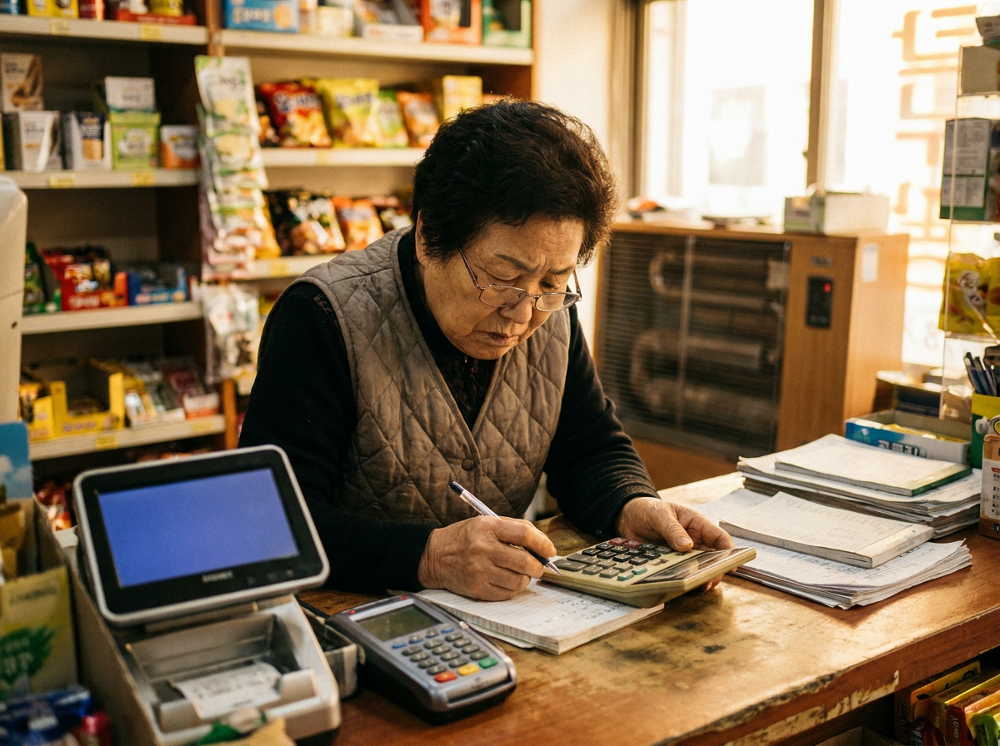
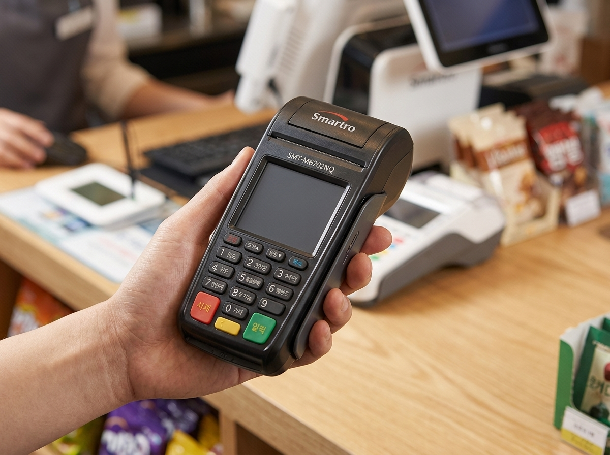

카드 수수료 우대·노란우산공제, 사장님이 놓치기 쉬운 혜택부터 정리했습니다
매출 규모가 크지 않은 자영업 매장이라면 카드 수수료 우대 제도와 노란우산공제, 이 두 가지부터 확인해 보시길 권합니다. 우대수수료는 영세·중소가맹점의 카드 결제 수수료 부담을 낮추기 위해 매출 규모에 따라 적용되는 제도이고, 노란우산공제는 폐업·노후에 대비해 매달 일정 금액을 적립하면서 세제 혜택도 함께 받을 수 있는 소상공인 공제 제도입니다. 둘 다 신청 여부나 가입 여부에 따라 실제 손에 쥐는 돈이 달라지는데, 바쁘게 매장을 운영하다 보면 그냥 지나치는 경우가 많습니다.

카드 수수료 우대, 매출 규모에 따라 적용되는 제도입니다
영세·중소가맹점 우대수수료는 연간 매출 규모가 일정 기준 이하인 가맹점에 대해 카드 결제 수수료를 낮춰 주는 제도입니다. 핵심은 사장님이 따로 복잡한 서류를 내고 심사를 받는 방식이 아니라, 국세청 신고 매출 등을 기준으로 구간이 정해지고 그에 맞는 우대 요율이 적용되는 구조라는 점입니다. 즉 "신청"보다는 "매출 기준에 따라 자동으로 반영되는" 성격에 가깝습니다.
다만 내 매장이 어느 구간에 해당하는지, 실제 적용된 요율이 맞는지는 사장님이 직접 확인해 보는 것이 좋습니다. 개업 초기이거나 매출이 변동된 경우, 실제 규모와 적용 구간이 어긋나 있는 경우도 있기 때문입니다. 구간별 매출 기준과 요율 같은 구체적인 수치는 해마다 조정될 수 있으므로, 이 글에서 특정 숫자를 단정하기보다는 여신금융협회 등 공식 기관에서 최신 기준을 직접 확인하시길 권합니다.
노란우산공제, 폐업·노후 대비와 세제 혜택을 함께
노란우산공제는 중소기업중앙회가 운영하는 소상공인·소기업 대표를 위한 공제 제도입니다. 매달 일정액을 납입해 두었다가 폐업·노령 등 정해진 사유가 생겼을 때 그동안 적립한 금액을 공제금으로 돌려받는 구조입니다. 사업이 어려워졌을 때를 대비한 일종의 안전망 역할을 합니다.
여기에 더해 납입한 금액에 대해 소득공제 혜택을 받을 수 있고, 적립금은 법적으로 압류가 제한되어 보호되는 등의 장점이 함께 있습니다. 다만 납입 한도, 소득공제 한도, 지급 이자율, 가입 자격 같은 세부 조건은 소득 구간이나 제도 개정에 따라 달라지므로, 정확한 내용은 반드시 노란우산(중소기업중앙회) 공식 안내를 통해 확인하셔야 합니다.

우대수수료 vs 노란우산공제, 한눈에 비교
| 구분 | 카드 수수료 우대 | 노란우산공제 |
|---|---|---|
| 성격 | 결제 수수료 부담 경감 | 폐업·노후 대비 적립 |
| 적용 방식 | 매출 기준에 따라 적용 | 본인이 가입·납입 |
| 주요 이점 | 카드 수수료 요율 인하 | 공제금 + 소득공제 등 |
| 확인·문의처 | 여신금융협회 | 노란우산(중소기업중앙회) |
두 제도는 성격이 전혀 다릅니다. 우대수수료는 매일의 결제 비용을 낮추는 쪽이고, 노란우산공제는 미래를 대비해 목돈을 쌓아 두는 쪽입니다. 그래서 어느 하나만 챙기기보다 두 가지를 함께 점검해 보는 것이 실속 있습니다.
어디서 확인하고 신청하나요
제도별로 담당 기관이 다릅니다. 카드 수수료 우대 관련 요율·구간은 여신금융협회에서, 노란우산공제 가입·조건은 노란우산(중소기업중앙회)에서 확인하시면 됩니다. 이 밖에 소상공인 대상 정책자금이나 지원사업은 소상공인시장진흥공단, 세금·소득공제 관련은 국세청(홈택스)에서 안내받을 수 있습니다.
한 가지 분명히 말씀드리면, 누리네트웍스는 POS와 카드 결제단말기를 공급·설치하는 결제 전문 기업입니다. 공제 가입 대행이나 정책자금 신청 대행은 하지 않습니다. 다만 매장을 운영하시는 사장님이 이런 제도를 스스로 챙기실 수 있도록 정보를 정리해 드리고, 결제·포스 환경 구성에 대해서는 상담을 도와드립니다.
자주 묻는 질문(FAQ)
Q. 우대수수료는 따로 신청해야 하나요?
매출 기준에 따라 적용되는 제도로, 별도 신청보다는 매출 규모에 따라 반영되는 성격입니다. 다만 실제 적용 여부·요율은 여신금융협회 등에서 직접 확인해 보시길 권합니다.
Q. 노란우산공제 납입 한도나 소득공제 한도가 궁금합니다.
한도와 이자율, 자격 요건은 소득 구간과 제도 개정에 따라 달라집니다. 정확한 수치는 노란우산(중소기업중앙회) 공식 안내에서 확인하셔야 합니다.
Q. 누리네트웍스에서 공제나 정책자금도 대행해 주나요?
아닙니다. 누리네트웍스는 결제·포스 전문 기업으로, 공제·정책자금 대행은 하지 않습니다. 요율·한도·대상 등 제도 세부는 여신금융협회, 중소기업중앙회(노란우산), 소상공인시장진흥공단, 국세청 등 공식 기관에서 반드시 확인하시기 바랍니다.
Q. 그럼 누리네트웍스에는 어떤 걸 문의하면 되나요?
포스, 카드단말기, 테이블오더, 키오스크 같은 매장 결제 환경 구성과 설치를 상담해 드립니다. 수도권 직접 설치를 기본으로 합니다.
결제·포스 구성 상담은 누리네트웍스
누리네트웍스는 14년간 3만여 매장에 결제 환경을 공급해 온 수도권 결제단말 전문 기업입니다. 연매출 70억 규모, 200곳 이상의 설치 레퍼런스를 바탕으로 매장에 맞는 포스·단말기 구성을 안내해 드립니다. 자세한 가격은 매장 상황에 따라 달라지므로 상담 시 안내드립니다.
- 📞 전화상담 1544-7754
- 🌐 홈페이지 nwpos.co.kr


- 매장에서 카드 결제를 받는 자영업 사장님의 일상
- 매장 결제 환경을 구성하는 무선카드단말기와 포스
- 우대수수료·노란우산공제를 확인하는 사장님의 모습